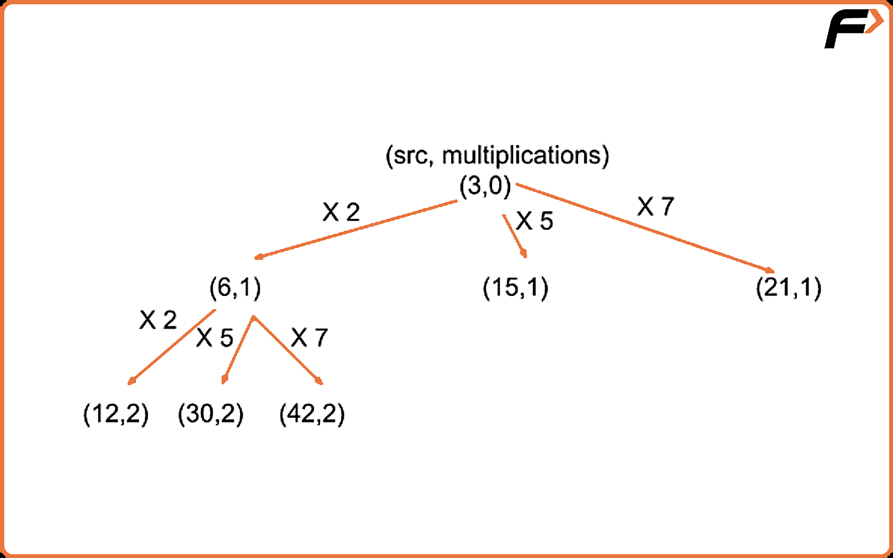
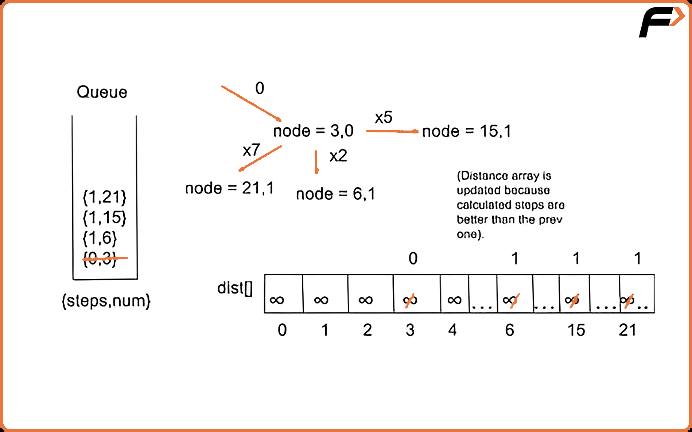

G-39: Minimum Multiplications to Reach End
Problem Statement: Given start, end, and an array arr of n numbers. At each step, the start is multiplied by any number in the array and then a mod operation with 100000 is done to get the new start. Your task is to find the minimum steps in which the end can be achieved starting from the start. If it is not possible to reach the end, then return -1.
Examples
Example 1:
Input:
arr[] = {2, 5, 7}
start = 3
end = 30
Output:
2
Explanation:
Step 1: 3*2 = 6 % 100000 = 6
Step 2: 6*5 = 30 % 100000 = 30
Therefore, in minimum 2 multiplications we reach the end number which is treated as a destination node of a graph here.
Example 2:
Input:
arr[] = {3, 4, 65}
start = 7
end = 66175
Output:
4
Explanation:
Step 1: 7*3 = 21 % 100000 = 21
Step 2: 21*3 = 6 % 100000 = 63
Step 3: 63*65 = 4095 % 100000 = 4095
Step 4: 4095*65 = 266175 % 100000 = 66175
Therefore, in minimum 4 multiplications we reach the end number which is treated as a destination node of a graph here.
Disclaimer: Here is the practice link to help you assess your knowledge better. It's highly recommend trying to solve it before looking at the solution.
Approach
Algorithm
Intuition
Since we need to find the minimum number of multiplications in order to attain the end number from the start number, the one standard algorithm that we can think of for finding the shortest/minimum paths is of course Dijkstra’s Algorithm. But a question may arise in our minds: how can we depict this problem in the form of a graph? So let us understand this through an illustration :

Initial configuration:
- Queue: Define a Queue which would contain pairs of the type {steps, num }, where ‘steps’ indicates the currently updated value of no. of steps taken to reach from source to the current ‘num’.
- Distance Array: Define a distance array that would contain the minimum no. of multiplications/distance from the start number to the current number. If a cell is marked as ‘infinity’ then it is treated as unreachable/unattained.
- Start and End: Define the start and the end value which we have to reach through a series of multiplications.
Algorithm
- Start by creating a queue that stores the step-num pairs in the form {steps, num} and a dist array with each node initialized with a very large number ( to indicate that they’ve not been attained initially). The size of the ‘dist’ array is set to 100000 because it is the maximum number of distinct numbers that can be generated.
- We push the start number to the queue along with its steps marked as ‘0’ initially because we’ve just started the algorithm.
- Pop the element from the front of the queue and look out for its adjacent nodes (here, adjacent nodes can be regarded as the numbers which we get when we multiply the start number by each element from the arr).
- If the current dist value for a number is better than the previous distance indicated by the distance array, we update the distance/steps in the array and push it to the queue.
- We repeat the above three steps until the queue becomes empty or we reach the end number.
- Return the calculated number of steps after we reach the end number. If the queue becomes empty and we don’t encounter the required number, return ‘-1’ indicating that the following number is unattainable by multiplying the start number any number of times.
Here’s a quick demonstration of the Algorithm’s 1st iteration for example 1 stated above ( all the further iterations would be done in a similar way ) :

Code
#include <bits/stdc++.h>
using namespace std;
class Solution
{
public:
int minimumMultiplications(vector<int> &arr,
int start, int end)
{
// Create a queue for storing the numbers as a result of multiplication
// of the numbers in the array and the start number.
queue<pair<int, int>> q;
q.push({start, 0});
// Create a dist array to store the no. of multiplications to reach
// a particular number from the start number.
vector<int> dist(100000, 1e9);
dist[start] = 0;
int mod = 100000;
// Multiply the start no. with each of numbers in the arr
// until we get the end no.
while (!q.empty())
{
int node = q.front().first;
int steps = q.front().second;
q.pop();
for (auto it : arr)
{
int num = (it * node) % mod;
// If the no. of multiplications are less than before
// in order to reach a number, we update the dist array.
if (steps + 1 < dist[num])
{
dist[num] = steps + 1;
// Whenever we reach the end number
// return the calculated steps
if (num == end)
return steps + 1;
q.push({num, steps + 1});
}
}
}
// If the end no. is unattainable.
return -1;
}
};
int main()
{
// Driver Code.
int start = 3, end = 30;
vector<int> arr = {2, 5, 7};
Solution obj;
int ans = obj.minimumMultiplications(arr, start, end);
cout << ans;
cout << endl;
return 0;
}Complexity Analysis
Time Complexity : O(100000 * N), Where ‘100000’ are the total possible numbers generated by multiplication (hypothetical) and N = size of the array with numbers of which each node could be multiplied.
Space Complexity : O(100000 * N), Where ‘100000’ are the total possible numbers generated by multiplication (hypothetical) and N = size of the array with numbers of which each node could be multiplied. 100000 * N is the max possible queue size. The space complexity of the dist array is constant.